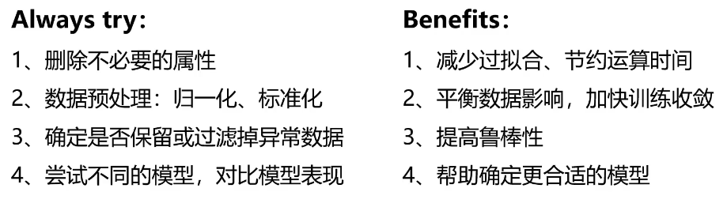
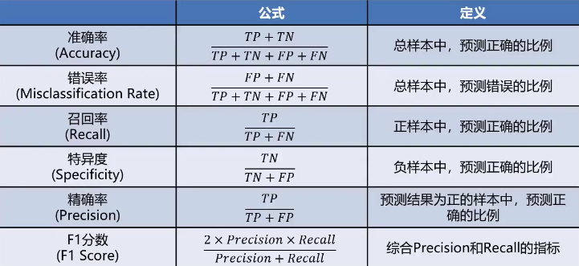

模型优化
数据的重要性
数据质量决定模型表现的上限！
Always check:
- 数据属性的意义，是否为无关数据
- 不同属性数据的数量级差异性如何
- 是否有异常数据
- 采集数据的方法是否合理，采集到的数据是否有代表性
- 对于标签结果，要确保标签判定规则的一致性（统一标准）

模型优化方法
- 遍历核心参数组合，评估对应模型表现（比如：逻辑回归边界函数考虑多项式，KNN尝试不同的n_neighbors值）
- 扩大数据样本
- 增加或减少数据属性
- 对数据进行降维处理
- 对模型进行正则化处理，调整正则项\(\lambda\)的数值
数据分离与混淆矩阵
数据分离
模型训练与评估流程
sequenceDiagram
participant 数据载入
participant 数据可视化预处理
participant 模型创建
participant 全数据用于模型训练
participant 模型评估
数据载入->>数据可视化预处理:
数据可视化预处理->>模型创建:
模型创建->>全数据用于模型训练:
全数据用于模型训练->>模型评估:
没有新数据用于评估模型表现怎么办？
对全数据进行数据分离，部分用于训练，部分用于新数据的结果预测。
流程
- 把数据分成两部分：训练集、测试集
- 使用训练集数据进行模型训练
- 使用测试集数据进行预测，更有效的评估模型对于新数据的预测表现。
代码实战
from sklearn.model_selection import train_test_split
X_train,X_test,y_train,y_test = train_test_split(X,y,random_state=4,test_size=0.4)
混淆矩阵（Confusion Matrix）
概念： 混淆矩阵，又称为误差矩阵，用于衡量分类算法的准确程度。
| 预测结果 | 预测结果 | ||
|---|---|---|---|
| 0 | 1 | ||
| 实际结果 | 0 | True Negative(TN) | False Positive(FP) |
| 实际结果 | 1 | False Negative(FN) | True Positive(TP) |
- True Negative(TN)：预测准确，实际为负样本的数量（实际0，预测0）
- True Positive(TP)：预测准确，实际为正样本的数量（实际1，预测1）
- False Positive(FP)：预测错误，实际为负样本的数量（实际0，预测1）
- False Negative(FN)：预测错误，实际为正样本的数量（实际1，预测0）
准确率评估问题
分类任务中，计算测试数据集预测准确率（accuracy）以评估模型表现
局限性：无法真实反映模型针对各个分类的预测准确度
举例
假如有如下一千个数据：数据中有900个1，和100个0，预测是0或1
模型1：预测出850个1预测正确，50个0预测正确，正确率90%
模型2：预测所有的样本结果都是1，准确率90%（空准确率）
准确率可以方便的用于衡量模型的整体预测效果，但无法反映细节信息，具体表现在：
- 没有体现数据预测的实际分布情况（0、1本身的分布比例）
- 没有体现模型错误预测的类型
更多模型评估指标
通过混淆矩阵，计算更丰富的模型评估指标 
混淆矩阵指标特点
- 分类任务中，相比单一的预测准确率，混淆矩阵提供了更全面的模型评估信息
- 通过混淆矩阵，我们可以计算出多样的模型表现衡量指标，从而更好地选择模型
哪个衡量指标更关键？
- 衡量指标的选择取决于应用场景
- 垃圾邮件检测（正样本为“垃圾邮件”）：希望普通邮件（负样本）不要被判断为垃圾邮件（正样本），即：判断为垃圾邮件的样本都是判断正确的，需要管局精确率，还希望所有的垃圾邮件尽可能被判断出来，需要关注召回率
- 异常交易检测（正样本为“异常交易”）：希望判断为正常的交易（负样本）中尽可能不存在异常交易，还需要关注特异度
过拟合和欠拟合
概念：模型不合适，导致其无法对数据实现有效预测。
Read on →决策树
一种对实例进行分类的树形结构，通过多层判断区分目标所属类别。
本质：通过多层判断，从训练数据集中归纳出一组分类规则。
均值漂移聚类（Mean-shift）
均值漂移算法：一种基于密度梯度上升的聚类算法（沿着密度上升方向寻找聚类中心点）
Read on →KNN（K近邻分类）算法（监督学习）
Read on →最简单的机器学习算法之一 给定一个训练数据集，对新的输入实例，在训练数据集中找到与该实例最邻近的K个实例（也就是上面所说的K个邻居），这K个实例的多数属于某个类，就把该输入实例分类到这个类中。
KMeans（K均值聚类）算法
K-均值算法：以空间中k个点为中心进行聚类，对最靠近他们的对象归类，是聚类算法中最为基础但也最为重要的算法。
Read on →无监督学习
机器学习的一种方法，没有给定事先标记过的训练示例，自动对输入的数据进行分类或分群。
优点：
- 算法不受监督信息（偏见）的约束，可能考虑到新的信息
- 不需要标签数据，极大程度扩大数据样本
主要应用
聚类分析、关联规则、维度缩减。应用最广的是聚类分析（clustering）